Study notes: Module IV: dielectric and magnetic properties of solids
8.1–8.2 Magnetic terminology and types of magnetism (student notes)
Before you start
- A magnetic dipole (a bar magnet or a current loop) and the field it makes (Plus Two recall below).
- Electrons as moving charges: an orbiting electron is a small current.
- Magnetic field $\mathbf{B}$ in tesla, and $\mu_0=4\pi\times10^{-7}$ H/m.
Recall. A current loop of area $A$ carrying current $I$ has magnetic moment $m=IA$. Materials are classed as diamagnetic, paramagnetic or ferromagnetic by how they behave in a field.
Re-derive.
- A magnetised solid is a collection of small moments. Their sum per unit volume is the magnetisation $\mathbf{M}$.
- In a weak field $\mathbf{M}$ is proportional to $\mathbf{H}$, so the ratio $\chi=M/H$ is a constant of the material.
- Materials with $\chi$ negative, small and positive, or large and positive are the three classes that Plus Two names.
Saved. Eq. (8.1) for $\chi$. The magnetic moment of a loop is the basis of §8.3 and §8.4.
1. Magnetisation and susceptibility (§8.1)
A solid placed in a magnetic field becomes magnetised. The magnetic moment per unit volume is the magnetisation $\mathbf{M}$. The susceptibility $\chi$ is the magnetisation produced per unit applied field:
Here $\mathbf{H}$ is the magnetic field intensity. In general $\mathbf{M}$ and $\mathbf{H}$ can point in different directions, so $\chi$ is a tensor. In an isotropic medium they point the same way and $\chi$ is a scalar. In SI units $M$ and $H$ are in A/m, so $\chi$ is dimensionless. If $M$ is per gram molecule, the value is the molar susceptibility $\chi_m$.
The magnetic flux density inside the material is given by
where $\mu_0=4\pi\times10^{-7}$ H/m is the permeability of free space. Using (8.1) in (8.2):
This can also be written with the absolute permeability $\mu$:
It is more convenient to use the relative permeability $\mu_r$, defined by
so that (8.4) becomes
Comparing (8.3) and (8.6) gives the link between permeability and susceptibility:
In free space $M=0$, $\chi=0$, $\mu_r=1$, and so $\mathbf{B}=\mu_0\mathbf{H}$ (8.8).
2. Where magnetism comes from and the five types (§8.2)
Magnetism in solids comes from the orbital and spin motion of electrons, and a much smaller part from the nuclear spins. The main contribution is the spin of unpaired valence electrons, which gives a permanent electronic moment. Whether a solid is magnetic, and how, depends on how many unpaired electrons its atoms have and on how neighbouring moments line up.
The book names five types:
- Diamagnetism: a very weak effect in solids with no permanent moments. The moment is induced by the orbital motion of electrons and always opposes the field.
- Paramagnetism: a weak effect from permanent moments. The moments line up with the field, so the effect is positive.
- Ferromagnetism: a very strong effect. Adjacent moments line up in the same direction, even with no field.
- Antiferromagnetism: adjacent moments are equal and opposite, so they cancel completely.
- Ferrimagnetism: like antiferromagnetism, but the adjacent moments are unequal, so they do not cancel.
Above a critical temperature the differences between these types disappear and every material is paramagnetic. Sections 8.3 to 8.7 take each type in turn.
8.3 Diamagnetism (student notes)
Before you start
- Lenz's law: an induced current opposes the change that produces it (Plus Two recall below).
- Coulomb's law for the nucleus pulling an orbiting electron, and the centripetal force $m\omega^2\rho$.
- The magnetic moment of a current loop, $\mu=IA$, and the vector potential $\mathbf{B}=\nabla\times\mathbf{A}$ (background, §8.3.2).
Recall. When the flux through a circuit changes, the induced current opposes the change.
Re-derive.
- An electron in a circular orbit is a current loop, so it carries a magnetic moment.
- Switching on a field changes the flux through that loop.
- By Lenz's law the induced current, and so the induced moment, opposes the field.
Saved. The induced moment is antiparallel to $B$, giving a negative susceptibility (Eq. 8.16, 8.20).
1. The classical (Langevin) picture (§8.3.1)
Take one electron in a circular orbit of radius $\rho$ and angular frequency $\omega_0$ about a nucleus of charge $Ze$. The electrostatic pull supplies the centripetal force:
This gives
Now apply a field $\mathbf{B}$ perpendicular to the orbit. The Lorentz force on the electron is
whose magnitude, for a circular orbit, is
With the field, the frequency becomes $\omega$. The force balance is
The minus sign comes from the negative charge. This leads to $\omega^2+(eB/m)\omega-\omega_0^2=0$, whose root for $eB/2m\ll\omega_0$ is
The frequency changes by $eB/2m$. Electrons whose orbital moment is parallel to the field slow down; antiparallel ones speed up. This is Larmor's theorem. The change in frequency gives an extra current:
The moment of this loop is current times area:
The minus sign shows the induced moment is opposite to the field. For $Z$ electrons with randomly oriented orbits the total is
For a spherically symmetric charge distribution $\langle x^2\rangle=\langle y^2\rangle=\langle z^2\rangle$, so the mean square radius relative to the nucleus is
Then (8.17) becomes
For $N$ atoms per unit volume the susceptibility is
This is the classical Langevin result. It is independent of temperature.
2. The quantum treatment (§8.3.2, background)
In quantum mechanics the Hamiltonian of an atomic electron changes by a small term $\mathcal{H}'$ in a field:
where $\mathbf{B}=\nabla\times\mathbf{A}$. For a uniform field,
Taking $\mathbf{B}$ along $z$:
Also $\nabla\cdot\mathbf{A}=0$, and $\mathbf{A}\cdot\nabla=\tfrac12B(x\partial_y-y\partial_x)$. So (8.21) becomes
The first term is proportional to $L_z$, the $z$-component of the angular momentum operator:
For a unit volume of $N$ atoms with $Z$ electrons each, the second term gives
This energy is of the second power in $B$, as a diamagnetic energy must be. Comparing it with $-\tfrac{1}{2\mu_0}\chi_{dia}B^2$ gives
Using (8.18):
This is the same as the classical result. In quantum mechanics $\langle r^2\rangle$ is found from the wave function, not from orbits. Agreement with experiment is good for light elements and rare gases. Helium has $\chi\approx-1.9\times10^{-6}$, which shows diamagnetism is very weak.
3. Worked Example 8.1: diamagnetism of atomic hydrogen
For the ground state of hydrogen, $\psi(r)=(\pi a_0^3)^{-1/2}\exp(-r/a_0)$ with $a_0=0.46$ Å. The mean square distance is $\langle r^2\rangle=\int\psi^*r^2\psi\,d\mathbf{r}=3a_0^2$. Equation (8.28) with $Z=1$ gives $\chi_{dia}=-(N\mu_0e^2/2m)a_0^2$. With $N=2.69\times10^{28}$ m$^{-3}$ and $a_0=0.46\times10^{-10}$ m, the book gives $\chi_{dia}=-1.01\times10^{-6}$ (SI).
8.4 Paramagnetism (student notes)
Before you start
- Potential energy of a magnetic dipole in a field, $U=-\boldsymbol{\mu}\cdot\mathbf{B}$ (Plus Two recall below).
- The Maxwell–Boltzmann factor $\exp(-E/kT)$ (given in the pre files as Beyond).
- Integration by the substitution $y=\cos\theta$ (Module III pre-math, M5).
Recall. A magnetic dipole of moment $\boldsymbol{\mu}$ in a uniform field $\mathbf{B}$ has potential energy $U=-\boldsymbol{\mu}\cdot\mathbf{B}$, and it tends to align with the field.
Re-derive.
- At an angle $\theta$ to the field, $U=-\mu B\cos\theta$.
- The lowest energy is at $\theta=0$, where the dipole lies along the field.
- Thermal agitation spreads the dipoles over all angles, so the net moment is only partly aligned.
Saved. The energy $U=-\mu B\cos\theta$ is used in §8.4.1 (Fig. 8.1).
1. Paramagnetic materials
Paramagnetism is found in atoms, ions and molecules that carry permanent moments. With no field the moments point at random, so there is no net magnetisation. A field lines them up partly, giving a small positive susceptibility that depends on temperature. The moments come from electron spin, electron orbital motion and nuclear spin. Paramagnetism occurs in metals, in atoms and molecules with an odd number of electrons (free sodium atoms, nitric oxide), in a few molecules with an even number (oxygen), and in free atoms and ions with a partly filled inner shell (rare earths, $\mathrm{Mn}^{2+}$).
2. Langevin's classical theory (§8.4.1)
Langevin considered $N$ atoms per unit volume, each with a permanent moment $\mu$, and neglected their mutual interaction. A dipole at angle $\theta$ to the field (Fig. 8.1) has energy $E=-\mu B\cos\theta$. By the Maxwell–Boltzmann distribution, the number of dipoles in the solid angle $d\omega$ is proportional to $\exp(\mu B\cos\theta/kT)$.
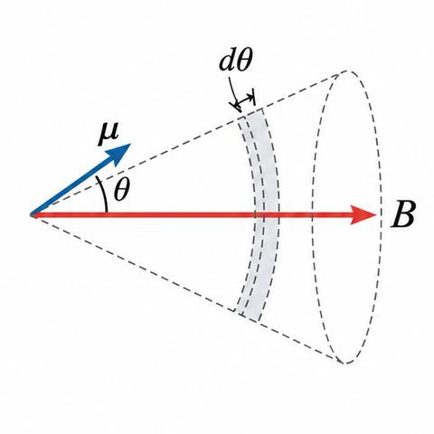
Each dipole contributes $\mu\cos\theta$ along the field. The components across the field cancel. So the magnetisation is the average of $\mu\cos\theta$, times $N$:
Write $x=\mu B/kT$ and $y=\cos\theta$, so $-\sin\theta\,d\theta=dy$. Then the integrals become exponentials, and
$L(x)$ is the Langevin function (Fig. 8.2).
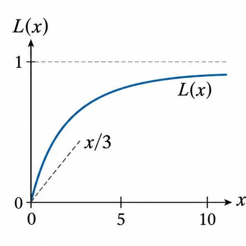
For $x\ll1$, which means normal fields and ordinary temperatures, $L(x)$ is close to its tangent at the origin, $x/3$:
So $M\cong N\mu^2B/3kT$, and the susceptibility is
This is inversely proportional to temperature:
with $C=\mu_0N\mu^2/3k$, the Curie constant. The Curie law holds when $\mu B\ll kT$. For large $x$ (high fields, low temperatures) $L(x)\to1$, and the magnetisation saturates:
3. Quantum theory of paramagnetism (§8.4.2)
In quantum theory the moments are quantised. The moment is related to the total angular momentum $\mathbf{J}$ by
Here $\mu_B=e\hbar/2m$ is the Bohr magneton, and $g$ is the Landé $g$-factor:
$g$ is 2 for pure spin and 1 for pure orbital motion. The component along the field is
where $m_J=-J,\ldots,+J$ takes $(2J+1)$ values. The energy of each state is
The magnetisation is the Boltzmann-weighted average over these states:
Two cases follow.
(i) Normal fields and ordinary temperatures. Here $m_Jg\mu_BB/kT\ll1$, so the exponentials are expanded. Using $\sum m_J=0$ and $\sum m_J^2=J(J+1)(2J+1)/3$:
so
where the effective number of Bohr magnetons is
(8.43) has the classical form (8.33) with
so the Curie law follows as before.
(ii) Low temperatures and strong fields. Now $gJ\mu_BB/kT$ is not small, and the magnetisation is
with $x=gJ\mu_BB/kT$ and the Brillouin function
For $x\ll1$, $\coth x\cong1/x+x/3$, which gives $B_J(x)=x(J+1)/3J$. Then the susceptibility is
which is (8.43) again. For $x\gg1$, $B_J\cong1$ and the saturation value is
For $J\to\infty$ the Brillouin function becomes $L(x)$, so the classical result is the limit of the quantum one. For other $J$ the two differ.
At room temperature (8.48) gives a susceptibility of order $10^{-7}$, and it grows by more than a hundredfold at 1 K. Hund's rules give $J$. Equation (8.48) predicts rare-earth ions well, but not ions of the iron group, because the crystal field can quench the orbital moment. Then
with $g=2$, and
For $\mathrm{Mn}^{3+}$ with $S=2$ this agrees with experiment, where (8.48) predicts zero.
4. Worked Examples 8.2 and 8.3
Example 8.2. A paramagnetic gas with $L=0$, $S=\tfrac12$ has $J=\tfrac12$, $m_J=\pm\tfrac12$ and $g=2$. The two levels have populations $N_{\pm1/2}$ with $N_{1/2}+N_{-1/2}=N$. The magnetisation is
For $N=10^{28}$ m$^{-3}$ and $B=2.5$ T, the book gives $N_{1/2}=5\times10^{27}\exp(1.68/T)/\cosh(1.68/T)$ and $M=9.27\times10^{4}\tanh(1.68/T)$. At 300 K this gives $N_{1/2}=4.97\times10^{27}$ m$^{-3}$, $N_{-1/2}=5.03\times10^{27}$ m$^{-3}$ and $M=519.1$ A/m. At 5 K, $N_{1/2}=3.38\times10^{27}$, $N_{-1/2}=6.62\times10^{27}$ m$^{-3}$ and $M=3.0\times10^{4}$ A/m.
Example 8.3. $\mathrm{Dy}^{3+}$ ($4f^9$) has $S=5/2$, $L=5$ and $J=15/2$ by Hund's rules. Then $g=1.33$. For one kilogram-mole of salt, $N=6.023\times10^{26}$, and the book gives $\chi=\frac{\mu_0N\mu_B^2g^2J(J+1)}{3kT}=5.9\times10^{-4}$ at 300 K.
8.5 Ferromagnetism: Weiss theory, exchange, domains and hysteresis (student notes)
Before you start
- The Brillouin function $B_J(x)$ and the saturated magnetisation $M_s=NgJ\mu_B$ from §8.4 (Eqs. 8.46, 8.47, 8.49).
- Spin and the Pauli exclusion principle (Plus Two recall below).
- The Curie–Weiss idea of a molecular field (Beyond the Plus Two base; §8.5.1 is the first time it appears).
Recall. A soft magnetic material is easily magnetised and demagnetised; a hard one keeps its magnetisation. Their behaviour is shown by a loop in $B$ against $H$.
Re-derive.
- Increase $H$ from zero and the magnetisation rises to a saturation value.
- Reduce $H$ to zero: some magnetisation remains (remanence $M_r$).
- Reverse $H$ until the magnetisation is zero (coercivity $H_c$). The closed curve is the hysteresis loop.
Saved. Hysteresis and the loop are developed in §8.5.3 (Fig. 8.6).
1. The Weiss theory (§8.5.1)
A ferromagnetic material has a spontaneous magnetisation below its Curie temperature $T_C$, with no field applied. Above $T_C$ it is paramagnetic. Its susceptibility is large and positive, and depends on the field. Iron, nickel, cobalt, gadolinium and dysprosium are examples.
Weiss made two hypotheses. First, the specimen is divided into domains, each spontaneously magnetised. Second, each domain has an exchange field $B_E$ that aligns the atomic dipoles, and this field is proportional to the magnetisation:
$\lambda$ is the Weiss-field constant and does not depend on temperature. The field is strong: for iron $B_E\approx1000$ T. The effective field on an atom is
Weiss first used the classical Langevin theory. The quantum form is used here. The magnetisation is
with the Brillouin function (8.55), which is (8.47) with $x$ defined by
2. Spontaneous magnetisation
With no applied field, $B=0$ and
As $T\to0$, $B_J\to1$, and the magnetisation becomes the saturation value
Combining (8.58) and (8.59), and then with (8.54) written as a ratio:
The two equations are solved together graphically (Fig. 8.3). Equation (8.60) is a straight line through the origin whose slope is proportional to $T$. Its intersection with the Brillouin curve gives $M_s(T)$. For $T\lt T_C$ there is a non-zero intersection, so there is spontaneous magnetisation. At $T_C$ the line is tangent to the curve at the origin. Above $T_C$ there is no such intersection.
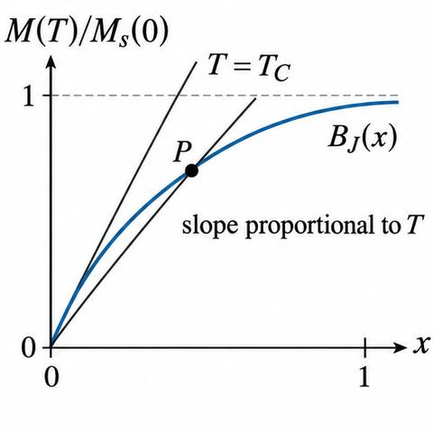
The spontaneous magnetisation falls with temperature and vanishes at $T_C$ (Fig. 8.4). This makes the transition a second-order phase transition, with $M_s$ as the order parameter.
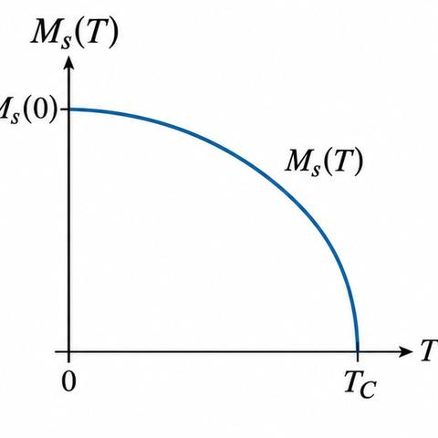
3. Above the Curie temperature
For $T>T_C$ the magnetisation is produced only by an applied field, and $x\ll1$, so $B_J(x)\cong\frac{J+1}{3J}x$. Then (8.54) becomes $M=Ng\mu_B(J+1)x/3$, and with (8.56):
This gives the Curie–Weiss law:
with
The law describes the paramagnetic region well, a few degrees above $T_C$. The Curie temperature from the spontaneous-magnetisation theory differs from the measured one by a few degrees.
4. The origin of the Weiss field: exchange (§8.5.2)
A dipole–dipole field would be of order $10^{3}$ G, far too small. For iron the Weiss field is of order $10^{7}$ G. Heisenberg proposed in 1928 that it comes from exchange interaction. This is electrostatic in origin, arising from the overlap of wave functions with the Pauli principle fixing the spin orientation. The Heisenberg exchange energy of two atoms is
$J_e$ is the exchange integral. It is positive at large separations and negative at small ones. A positive $J_e$ favours parallel spins, which is why it gives magnetism. For iron-group atoms $J_e$ is positive, and Bethe and Slater showed that $J_e>0$ when $r_{ij}/r_{3d}$ is greater than about 3 (Fig. 8.5). This favours Fe, Co, Ni and Gd, and not Mn or Cr.
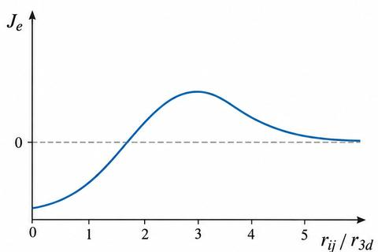
Stoner's method takes the time average of the neighbouring spins over $z$ nearest neighbours:
For magnetisation $M$ along $z$, $\langle S_{xj}\rangle=\langle S_{yj}\rangle=0$ and
So
with
The factor is the Weiss constant:
and (8.73) reduces to $B_E=\lambda M$, which is (8.52).
5. Domains and hysteresis (§8.5.3)
A ferromagnetic crystal is divided into domains, each spontaneously magnetised. Their directions are random, so the crystal as a whole has no net magnetisation. An applied field makes the favourable domains grow at the expense of the others (Fig. 8.7b), and then rotates their magnetisation towards the field (Fig. 8.7c).
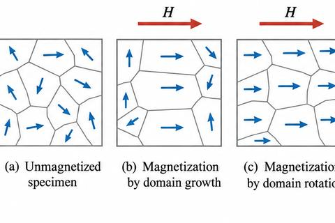
Neel explained the domain structure by minimising total energy: magnetic field energy, anisotropy energy, domain-wall energy and magnetostrictive energy. Subdividing a domain reduces the field energy, but each new wall costs energy, so a finite domain structure is the minimum.
Hysteresis is shown by all ferromagnets. For $T\lt T_C$, the two solutions of (8.61) and
trace the boundary of the hysteresis loop (Fig. 8.6). Starting from zero, the initial curve OA is reversible; AB is a large irreversible growth of domains; BC is slow rotation to saturation $M_s$. On reducing the field there is a remanence $M_r$. The field that brings $M$ to zero is the coercive field $H_c$. The loop CEFKC is closed, and a $B$–$H$ loop of similar shape is drawn. The loop shows the quality of a magnetic material and so the choice for an application.
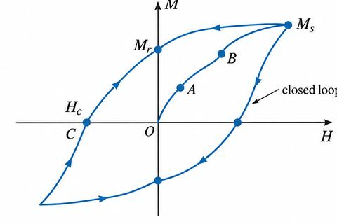
6. Worked Example 8.4: intrinsic flux density and the field ratio
For $J=3/2$, $g=2$ and $T_C=125$ K: at 0 K the intrinsic flux density is $B_E=\lambda M_s(0)$. From (8.66), $B_E=3kT_C/[g\mu_B(J+1)]=111.6$ T. Above $T_C$ the magnetisation follows (8.84):
so $M/M_s(0)=g\mu_BB(J+1)/[3k(T-T_C)]$. For $B=1$ mT and $T=300$ K this gives $M/M_s(0)=6.4\times10^{-6}$.
8.6–8.7 Antiferromagnetism and ferrimagnetism (student notes)
Before you start
- Curie–Weiss law $\chi=C/(T-T_C)$ (Eq. 8.64) and the paramagnetic law (8.33), from §8.4 and §8.5.
- Exchange interaction and its sign (§8.5.2): negative exchange favours antiparallel spins.
The Plus Two base does not cover these types; the pre file marks them Beyond. Antiparallel alignment (pre item P14) is the qualitative idea.
1. Antiferromagnetism (§8.6)
In an antiferromagnet the spins of neighbouring atoms are antiparallel (Fig. 8.8), or the exchange integral is negative. The crystal consists of two interpenetrating sublattices, A and B, magnetised in opposite directions. With no field the moments cancel and there is no magnetisation. MnO was the first crystal in which this was observed.
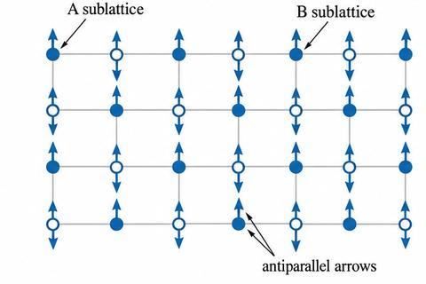
A small field gives a small magnetisation in its direction, which grows with temperature up to the Néel temperature $T_N$. Above $T_N$ the material is paramagnetic. The susceptibility has a weak cusp at $T_N$, not the infinity of a ferromagnet (Fig. 8.9).
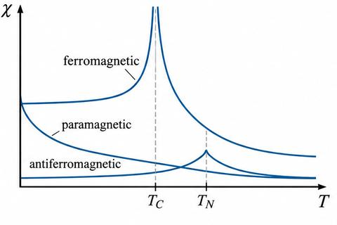
2. Néel's molecular-field picture
Each sublattice atom has nearest-neighbour negative AB interaction, and a weaker AA or BB interaction. With Weiss field constants $\alpha$ (for AA and BB) and $\beta$ (for AB), the internal fields at sites A and B are
With an external field $B$, the effective fields are
Above $T_N$. Each sublattice is paramagnetic, with the paramagnetic law (8.33) applied to its field:
where $\mu^2=\mu_B^2g^2J(J+1)$. The two sublattices have equal densities, $N_A=N_B=N$. Adding them and using (8.77):
This gives the susceptibility
with
Equation (8.80) has the Curie–Weiss form, except that it has $T+\theta$ where the ferromagnet has $T-T_C$. The $1/\chi$ against $T$ lines for the three types are compared in Fig. 8.10.
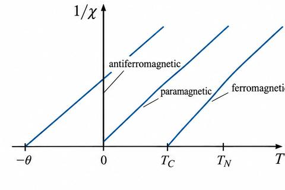
The Néel temperature is not the same as $\theta$:
So $T_N$ depends on both interactions. For $\alpha=0$, $T_N=\theta$. For positive $\alpha$, $T_N\lt \theta$, and $T_N$ rises with $\beta$. Experiments confirm this.
Below $T_N$. Each sublattice is spontaneously magnetised, but the net magnetisation is zero. The susceptibility perpendicular to the easy direction, $\chi_\perp$, is almost constant. The susceptibility parallel to it, $\chi_\parallel$, falls to zero as $T\to0$: at 0 K the internal field stops the spins from turning. At $T_N$, $\chi_\perp=\chi_\parallel=\chi$ (Fig. 8.11).
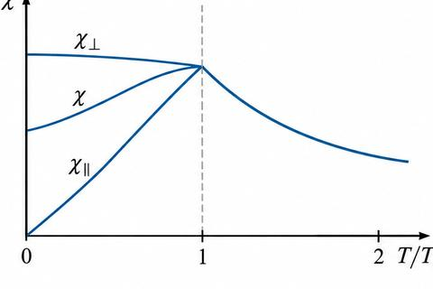
3. Ferrimagnetism (§8.7)
A ferrimagnet is an antiferromagnet whose sublattice moments differ in size, so there is a net magnetisation. The typical material is a ferrite, an oxide of metals. The example is magnetite, $\mathrm{Fe_3O_4}$ (or $\mathrm{FeO\cdot Fe_2O_3}$). One $\mathrm{Fe^{3+}}$ ion occupies tetrahedral (A) sites, and the other $\mathrm{Fe^{3+}}$ and the $\mathrm{Fe^{2+}}$ occupy octahedral (B) sites. The A and B sublattices have opposite magnetisations, and the net moment of one formula unit equals that of one $\mathrm{Fe^{2+}}$ ion (Fig. 8.12). A unit cell of the spinel structure has eight formula units.
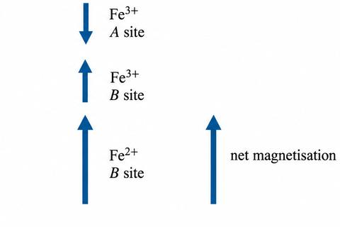
A ferrimagnet resembles a ferromagnet: both have spontaneous magnetisation, and both show hysteresis. Néel attributed the antiparallel arrangement to the negative AB interaction, with weaker AA and BB interactions. Above $T_C$ both sublattice magnetisations follow the Curie–Weiss law; below it the saturation effects of Eq. (8.46) apply. The detailed theory is beyond the book's scope.
9.1–9.3 Polarisation, local field and dielectric constant (student notes)
Before you start
- A dielectric between capacitor plates and the dielectric constant $K=C/C_0$ (Plus Two recall below).
- Electric dipole moment $p=qd$ and the field of a dipole.
- Algebra of solving for one quantity in a ratio (Module IV pre-math, M2).
Recall. Putting a dielectric of constant $K$ between the plates of a capacitor multiplies its capacitance by $K$: $C=KC_0$.
Re-derive.
- The dielectric's dipoles are polarised and produce bound charges on its faces.
- These bound charges oppose the field of the free charges, so the net field inside is smaller.
- For the same charge, a smaller field means a larger voltage ratio, so $C$ rises by $K$.
Saved. The reduction of the field by polarisation is Eq. (9.1), and the constant $\varepsilon_r$ is Eq. (9.5).
1. Polarisation and susceptibility (§9.1)
A dielectric is an insulator with no free carriers. In an external field $\mathbf{E}_o$ its charges are displaced by distances smaller than an atomic diameter, so it forms a large number of dipoles aligned with the field. The material is polarised, with polarisation $\mathbf{P}$, the dipole moment per unit volume. The polarisation field $\mathbf{E}_p$ opposes the applied field, so the resultant field is smaller:
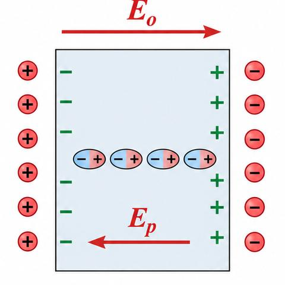
The field $\mathbf{E}_p$ is due to fictitious bound charges on the surfaces of the slab. For ordinary fields $\mathbf{P}$ is proportional to the macroscopic field $\mathbf{E}$, and in SI units
where $\varepsilon_o$ is the permittivity of free space and $\chi_e$ is the electric susceptibility. Except for a constant, $\chi_e$ measures the polarisation per unit resultant field.
2. The local field (§9.2)
The field acting on an atom is not the macroscopic field $\mathbf{E}$. It is the local field. For an atomic site of cubic symmetry, the Lorentz relation gives
The local field includes the field of the polarisation of the other atoms, which is the extra term $\mathbf{P}/3\varepsilon_o$. The expression changes with the shape of the specimen.
3. Dielectric constant and polarisability (§9.3)
The electric displacement for an isotropic or cubic medium is
$\varepsilon_r$ is the relative permittivity, or dielectric constant. It is dimensionless and, for an isotropic medium, a scalar. From (9.4):
So the dielectric constant measures the polarisation per unit resultant field, just as $\chi_e$ does.
The polarisability $\alpha$ of an atom is its dipole moment per unit local field:
Polarisability is an atomic property. The dielectric constant is a macroscopic property that depends on how the atoms are arranged. For $N$ atoms of equal $\alpha$ per unit volume,
and in general
For cubic symmetry, (9.3) and (9.7) give
Solving for $P$ gives
and, using (9.5),
This can be written as
which rearranges to the Clausius–Mossotti relation:
In general form, for several kinds of atom,
This relates the macroscopic dielectric constant to the atomic polarisability, for cubic symmetry.
9.4–9.5 Sources of polarisability and its frequency dependence (student notes)
Before you start
- The Clausius–Mossotti relation (Eq. 9.12) from §9.3.
- Potential energy of a dipole in a field, $U=-\mathbf{p}\cdot\mathbf{E}$ (Plus Two recall below).
- Simple harmonic motion: $\ddot x+\omega_0^2x=0$.
Recall. An electric dipole of moment $\mathbf{p}$ in a uniform field $\mathbf{E}$ has potential energy $U=-\mathbf{p}\cdot\mathbf{E}$.
Re-derive.
- At angle $\theta$, $U=-pE\cos\theta$, lowest when the dipole lies along the field.
- Thermal motion spreads the orientations, so only a partial alignment remains.
- The average alignment depends on $pE/kT$, which gives the orientational polarisability.
Saved. Eq. (9.24) and the result (9.31).
1. Three sources of polarisability (§9.4)
The polarisability of a dielectric comes from three sources: electronic, ionic and dipolar (orientational). Which one matters depends on the material and on the frequency of the field.
2. Electronic polarisability (§9.4.1)
Electronic polarisation is the shift of an atom's electron cloud relative to its nucleus (Fig. 9.2). At optical frequencies the dielectric constant is due mainly to this. Replacing $\varepsilon_r$ by $n^2$, where $n$ is the refractive index, (9.13) becomes
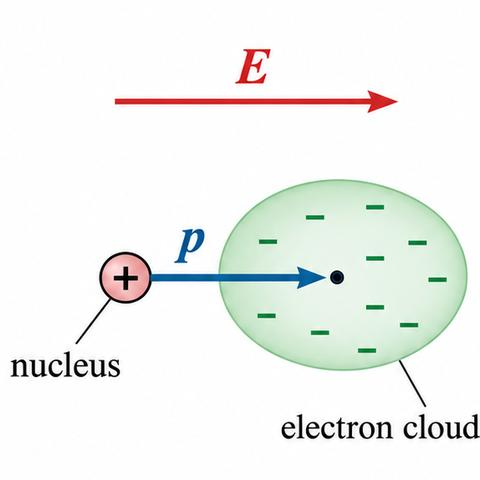
Classical theory. An electron bound harmonically to an atom resonates at
where $\beta$ is the force constant. If the displacement under the local field is $x$:
so the static electronic polarisability is
For a field $E_{loc}\sin\omega t$ at frequency $\omega$, the equation of motion is
With $x=x_o\sin\omega t$:
The dipole amplitude $p_o=-ex_o=e^2E_{loc}/[m(\omega_o^2-\omega^2)]$ gives the frequency-dependent polarisability
Quantum theory gives the same form, summed over transitions, with the oscillator strength $f_{ij}$:
3. Ionic polarisability (§9.4.2)
Ionic polarisation is the displacement of a charged ion relative to the others in a solid. For small displacements the force is simple harmonic, so
For $\beta\simeq20$ N/m, $\alpha_i\simeq10^{-39}$ F m$^2$. Ionic polarisation matters at low frequencies. Sodium chloride has $\varepsilon_r\simeq5.6$ at low frequencies, falling to about 2.25 at optical frequencies.
4. Dipolar (orientational) polarisability (§9.4.3)
A polar molecule such as $\mathrm{H_2O}$ has a permanent dipole. With no field the orientations are random. A field orients the dipoles, and thermal agitation opposes this. In equilibrium the dipoles are spread over all angles. The energy at angle $\theta$ (Fig. 9.3) is
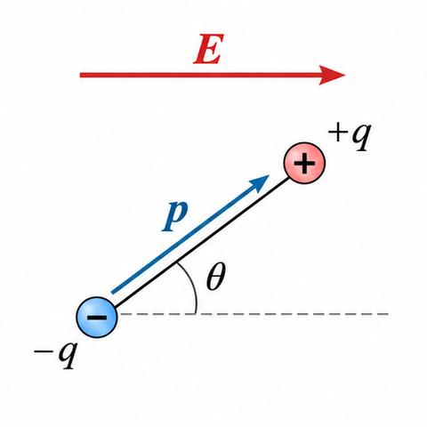
The number of dipoles in the solid angle $d\Omega=2\pi\sin\theta\,d\theta$ is proportional to
Each dipole contributes $p\cos\theta$ along the field. So the contribution to the polarisation is
and the average dipole moment per molecule is
With $x=pE/kT$ and $y=\cos\theta$, the same algebra as in §8.4.1 gives
For $pE\ll kT$, $L(x)\simeq x/3$:
So
and the dipolar polarisability per molecule is
Only molecules with a permanent dipole have this term. It falls with temperature. At room temperature $\alpha_d\sim10^{-39}$ F m$^2$, which is comparable to the electronic value.
5. Frequency dependence of the total polarisability (§9.5)
The total polarisability is the sum of the three contributions:
It falls as the frequency rises (Fig. 9.4). Each process has a relaxation time, and it stops contributing once the frequency is high compared with the inverse of its relaxation time. Dipolar relaxation is slowest, so the dipolar part disappears first, then the ionic part, and the electronic part last.
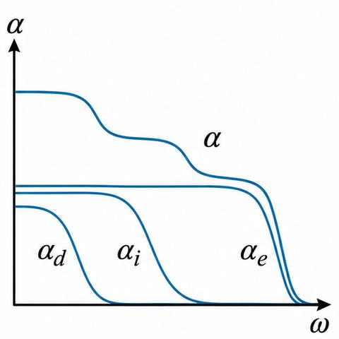
6. Worked Example 9.1: ionic share of polarisability in NaCl
For NaCl the refractive index is $n=1.5$ and the static dielectric constant is $\varepsilon_r=5.6$. From the Clausius–Mossotti relation, with the static dielectric constant and the total polarisability $\alpha_e+\alpha_i$:
At optical frequencies, only the electronic part remains:
Dividing (9.41) by (9.40) gives
The percentage of ionic polarisability is
9.6–9.7 Ferroelectricity and piezoelectricity (student notes)
Before you start
- Dielectric constant and the Clausius–Mossotti relation (§9.3, Eqs. 9.12, 9.13).
- Polarisability sources (§9.4).
- Ferromagnetism as the analogy: spontaneous magnetisation below $T_C$ (§8.5).
Ferroelectricity and piezoelectricity are Beyond the Plus Two base (pre item P12). The Plus Two base gives only the idea of polarisation; the statements here are qualitative.
1. Ferroelectricity (§9.6)
Ferroelectricity is spontaneous polarisation, which means polarisation with no applied field. It is the electrical analogue of ferromagnetism. In a ferroelectric crystal the centres of positive and negative charge do not coincide even with no field, so there is a permanent dipole. Polarisation against field is not linear, and gives a hysteresis loop. Above the transition temperature, the Curie point $T_C$, the crystal becomes paraelectric and its dielectric constant falls sharply.
Barium titanate ($\mathrm{BaTiO_3}$) and Rochelle salt ($\mathrm{NaKC_4H_4O_6\cdot4H_2O}$) are the familiar examples. The ferroelectrics fall into two groups. In the order–disorder group, the transition is the ordering of ions, and in hydrogen-bonded crystals the motion of protons matters ($\mathrm{KH_2PO_4}$, $\mathrm{RbH_2PO_4}$). In the displacive group, the transition is the displacement of one sublattice of ions relative to another ($\mathrm{BaTiO_3}$, $\mathrm{KNbO_3}$, $\mathrm{LiTaO_3}$).
$\mathrm{BaTiO_3}$. Above the Curie point (about 380 K) the crystal is cubic: $\mathrm{Ba^{2+}}$ at the corners, $\mathrm{O^{2-}}$ at the face centres and $\mathrm{Ti^{4+}}$ at the body centre (Fig. 9.5). The centres of charge coincide and there is no dipole. Below $T_C$, the Ti and Ba ions move up and the O ions move down, and the structure becomes tetragonal. The centres of charge then separate, which gives the spontaneous polarisation.
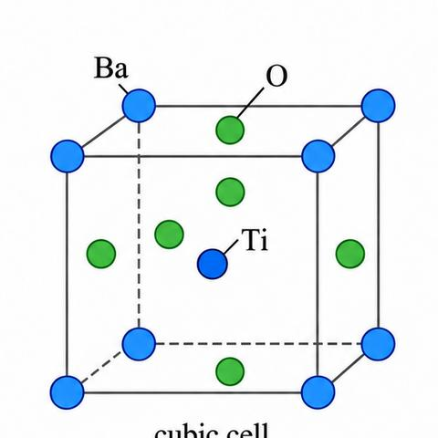
In $\mathrm{BaTiO_3}$ the ferroelectricity comes from induced electronic and ionic dipoles. Rewriting (9.13) for this case gives
where $\alpha_j$ is the electronic plus ionic polarisability of the $j$th ion. This assumes the local field at every atom is $\mathbf{E}+\mathbf{P}/3\varepsilon_o$. From (9.33), $\varepsilon_r$ becomes infinite when
which allows a finite polarisation with no applied field. This is the condition for the polarisation catastrophe: the local field from the polarisation grows faster than the elastic restoring force on an ion. The shift is limited to a finite displacement by higher-order restoring forces.
Because $\varepsilon_r$ is very sensitive to small departures from the critical value, put
with $s\ll1$. Then (9.33) gives
Near the transition take $s$ to vary linearly with temperature, as might happen through thermal expansion of the lattice:
where $\xi$ is a constant. Then
This temperature dependence is close to the measured behaviour in the paraelectric state, as the Curie–Weiss law (8.64) is for ferromagnets.
2. Piezoelectricity (§9.7)
In some crystals an applied stress produces a net dipole moment, so polarisation charges appear on the surfaces. These are piezoelectric crystals, such as quartz, Rochelle salt and tourmaline. The inverse effect also occurs: an applied electric field strains the crystal. In one-dimensional notation the piezoelectric equations are
where $P$ is the polarisation, $Z$ the stress, $d$ the piezoelectric strain constant, $E$ the field, $\chi$ the susceptibility, $e$ the strain and $s$ the compliance. The first gives polarisation from stress, and the second strain from field. The strains are small: in quartz a field of about $10^4$ V/m gives a strain of about one part in $10^8$.
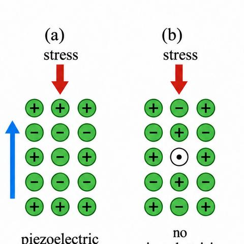
Piezoelectricity needs the ions to be displaced so that the charge distribution loses its symmetry. The prerequisite is the absence of a centre of inversion (Fig. 9.6). Quartz has no centre of inversion and is piezoelectric. Every ferroelectric is piezoelectric, but not every piezoelectric is ferroelectric: $\mathrm{BaTiO_3}$ is both, quartz only piezoelectric.
Piezoelectric materials convert electrical energy into mechanical energy and back. They are used in gramophone pick-ups, microphones, strain gauges and ultrasonic generators.